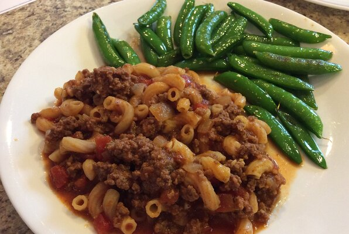

Goulash Recipe

Easy recipe for making a classic goulash. Can also be done in a slow cooker. Inspired by Paula Deen's Bobby's Goulash.
Ingredients
- 2 lbs lean ground beef
- 2 large chopped yellow onions
- 3 chopped cloves of garlic
- 3 cups of water
- 2 (15 ounce) cans tomato sauce
- 2 (14.5 ounce) cans diced tomatoes
- 3 tablespoons soy sauce
- 2 tablespoons dried Italian herb seasoning
- 3 bay leaves
- 1 tablespoon seasoned salt, or to taste
- 2 cups uncooked elbow macaroni
Easy homemade Goulash recipe for you to try at home for an easy meal in! This recipe is delicious and sure to be a hit with the family.
Per Serving: 386 calories; protein 28.2g; carbohydrates 34.1g; fat 14.6g; cholesterol 74.3mg; sodium 1466.1mg. Additional nutrition information can be found on our website.
Instructions
- Cook and stir the ground beef in a large Dutch oven over medium-high heat, breaking the meat up as it cooks, until the meat is no longer pink and has started to brown, about 10 minutes. Skim off excess fat, and stir in the onions and garlic. Cook and stir the meat mixture until the onions are translucent, about 10 more minutes.
- Stir water, tomato sauce, diced tomatoes, soy sauce, Italian seasoning, bay leaves, and seasoned salt into the meat mixture and bring to a boil over medium heat. Reduce heat to low, cover, and simmer 20 minutes, stirring occasionally.
- Stir macaroni into the mixture, cover, and simmer over low heat until the pasta is tender, about 25 minutes, stirring occasionally. Remove from heat, discard bay leaves, and serve.